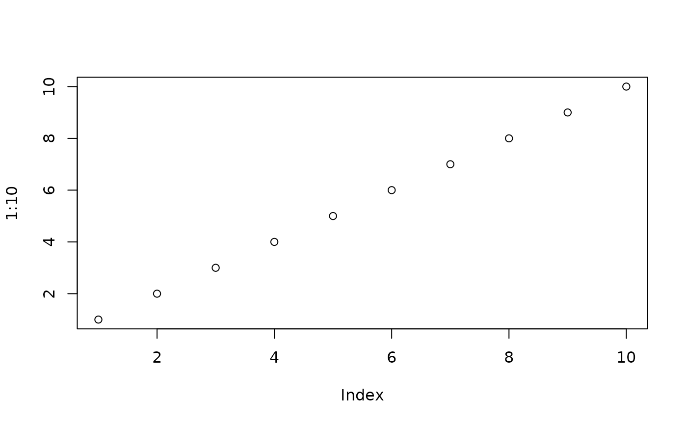

Draws a plot to one or several graphics files (PNG, TIFF, PDF, SVG) in a
single call, controlled by a session-wide switch. It is meant for analysis
scripts that produce publication figures: the plot call is written once,
piped into exportPlot(), and the files are only (re)written when the
switch is on. Running a chunk interactively then shows the plot on screen
without overwriting the figures produced by an earlier, final run.
options(pharos.exportPlot = TRUE) # once, at the top of the script
plotXY(y ~ x, data = d) |>
exportPlot("fig1", type = c("png", "tif"))Usage
exportPlot(
expr,
file,
type = "png",
width = 16/3,
height = width,
res = 300,
create = getOption("pharos.exportPlot", FALSE),
screen = TRUE
)Arguments
- expr
a call that draws a plot, typically piped in with
|>, or a braced block of drawing calls. It is not evaluated beforeexportPlot()runs, and is evaluated several times (see Details).- file
the path of the output file, without extension; one file per element of
typeis written, with the extension of that type. A trailing extension.png,.tif,.tiff,.pdfor.svgis removed. Required ifcreate = TRUE.- type
one or several of
"png","tif","pdf"and"svg". Default is"png". TIFF files are LZW-compressed; SVG needs a working cairo device.capabilities("cairo")is not enough to tell: on macOS it can beTRUEwhilesvg()cannot open a device (XQuartz missing). A device that cannot be opened is an error.- width, height
the size of the plot in inches. The default width of
16/3inches gives 1600 pixels at 300 dpi;heightdefaults towidth.- res
the resolution in dpi for the bitmap formats PNG and TIFF. Ignored for PDF and SVG.
- create
logical; if
TRUE, the files are written. Defaults to the optionpharos.exportPlot, orFALSEif the option is not set.- screen
logical; if
TRUE(default), the plot is also drawn on the current device when files are written. Without files (create = FALSE) the plot is always drawn on the current device.
Value
the paths of the written files as a character vector, invisibly;
character(0) if create = FALSE.
Details
exportPlot() does not receive a finished plot but the plot call. The
native pipe rewrites f(x) |> exportPlot() into exportPlot(f(x)), and
since R evaluates arguments lazily, f(x) has not been run when
exportPlot() starts. The call is captured with substitute() and
evaluated once per output file on a freshly opened device, and finally
once on the current device. Every file is therefore drawn at its own size
and resolution: margins, label widths and font sizes that a plot function
computes from the device (e.g. via strwidth()) are right for each
format. Replaying a recorded plot (recordPlot()) would freeze the values
computed on the screen device instead.
This only works with the native pipe |> or with a direct call
exportPlot(plot(...), ...), which also accepts a braced block of several
drawing calls (see Examples). The magrittr pipe %>% hands over a
placeholder, not the call.
Repeated evaluation. Everything in expr runs once per output file
and once more on the screen if requested (screen): assignments,
messages, file operations and
expensive computations included. Prepare the data beforehand and pass
only the drawing calls.
Random numbers. If a random number generator state exists, it is
restored before each evaluation, so every output starts from the same
state, and the state after the call is that of a single evaluation. A plot
that draws random numbers (jitter, sampling) then comes out the same in
every file, as long as it consumes the same random numbers on every
device; a plot that branches on device properties may not. In a fresh
session in which no random number has been drawn yet there is no state to
restore, and the outputs are not synchronised; call set.seed() first.
Graphics systems. Base graphics are drawn by the call itself.
ggplot and trellis objects, which are only drawn when printed, are
printed on each device; a grob is drawn on a new page with
grid::grid.draw(). This applies only to a visible result, as at the
console: exportPlot(p, ...) draws the ggplot p, while
exportPlot(print(p), ...) draws it once through print(), which
returns it invisibly. An object returned invisibly is never drawn
automatically.
Switch. create defaults to the option pharos.exportPlot, which
is FALSE unless set. A script thus decides in one place whether its
figures are written, while single calls can still override it.
Devices. Each file device is closed by its own number after drawing,
also if the plot call fails or opens or activates another device. The
device that was current before the call is made current again, provided
it is still open. If a file device cannot be opened, exportPlot()
stops before drawing, with the device's own message as the reason; the
current device is left untouched, and files of earlier types in type
remain written.
See also
stamp() for the corner stamp, which plot functions in pharos
draw by default and which is usually suppressed (stamp = FALSE) in
figures for publication.
Examples
# without the switch, the plot is only drawn
plot(1:10) |>
exportPlot(file.path(tempdir(), "demo"))

# write a PNG and a PDF, nothing on the screen
f <- plot(1:10, main = "Demo") |>
exportPlot(file.path(tempdir(), "demo"), type = c("png", "pdf"),
width = 4, create = TRUE, screen = FALSE)
f
#> [1] "/tmp/Rtmp4kvcRO/demo.png" "/tmp/Rtmp4kvcRO/demo.pdf"
file.exists(f)
#> [1] TRUE TRUE
unlink(f)
# a composed base plot: the model is fitted outside, as expr is
# evaluated once per file
fit <- lm(dist ~ speed, data = cars)
f <- exportPlot({
plot(dist ~ speed, data = cars)
abline(fit)
legend("topleft", legend = "Regression", lty = 1)
}, file.path(tempdir(), "figure1"), create = TRUE, screen = FALSE)
unlink(f)
# switch it on for the whole script
opt <- options(pharos.exportPlot = TRUE)
f <- plot(1:10) |>
exportPlot(file.path(tempdir(), "demo"), screen = FALSE)
unlink(f)
options(opt)